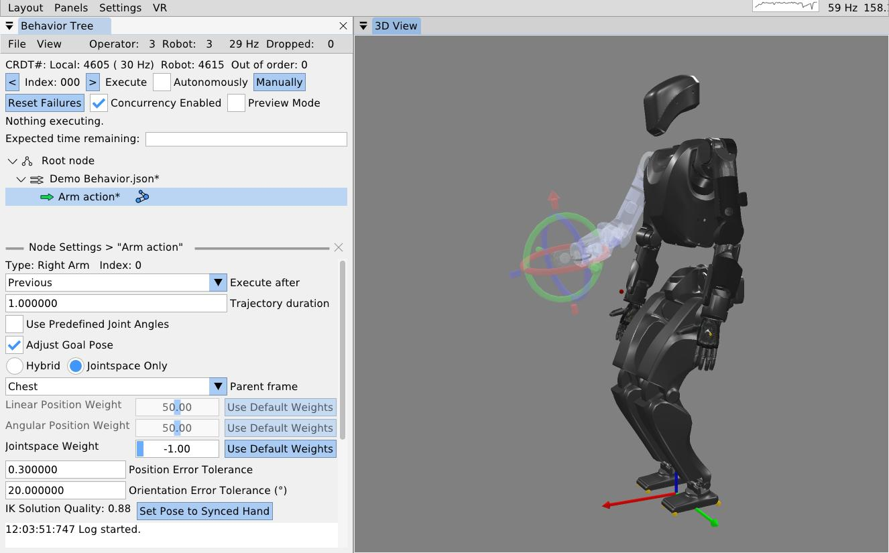
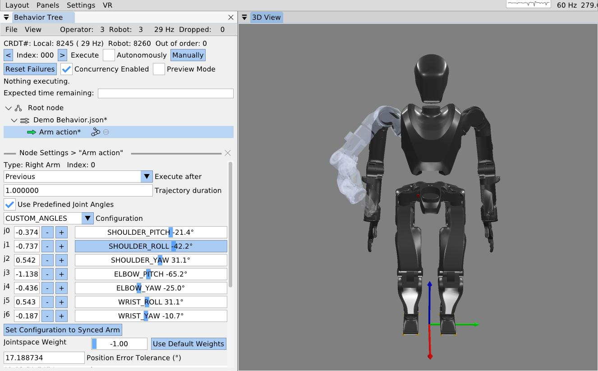
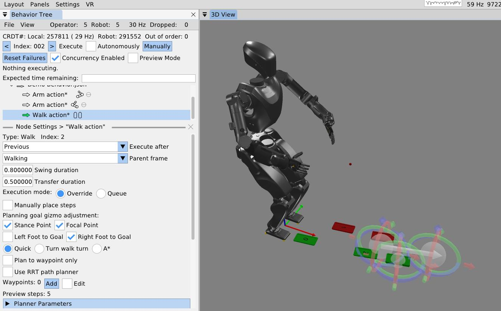

Basic Example: Move the Arms and Walk
Simulation Setup
To start, we’ll be working in a simulation environment that we call the “behavior test facilitator”. It allows an operator to exercise system functionality without a vision and physics accurate simulator and without addressing any sim-to-real gaps. We use a kinematics-only simulation of the robot that plays back the nominal motions without feedback from a physical environment. In effect, this means that the desireds ultimately get set to the actuals for free motions and a special heuristic is used to hold the feet in place when ground contact is expected.

To open the program, we will run the Java program AlexRDXBehaviorTestFacilitator.
The initial view is shown in 1.
The behavior tree panel is on the left and the 3D view is on the right.
The behavior tree panel is where an interactive model of the currently loaded behavior tree is rendered.
The 3D view renders the current, live robot state as an opaque, realistically colored robot model alongside virtual interactable elements that model planned actions and virtual scene elements.
3D Viewport Camera
The 3D view camera is controlled using the scheme developed and used in the DARPA Robotics Challenge era user interface. We use this “focus based” camera view control algorithm because it simplifies getting the camera where you need it so it can be done quickly. Since robots typically exist in 2D spaces under gravity, the most common translation camera movements are in the X-Y plane. Additionally, our tasks most often focus on controlling a robot or inspecting specific things positioned in the environment. For this reason, our “focus based” camera is based on a movable focus point in 3D space, meant to be located at the thing you are inspecting or monitoring. The camera always faces this focal point and in the user interface it is represented as a small red sphere which is resized dynamically in 3D to be a constant small size in screen space, so it doesn’t get huge or too small to see. The keyboard controls, W, A, S, and D, translate the camera on the current X-Y plane that the focus point resides on. The Q and Z keys move the focal point up and down along the world frame Z axis. The camera orbits the focal point using a longitude and latitude. The longitude freely loops 360 degrees around the focal point about its world Z axis. The latitude, however, is bounded by +/- 90 degrees above and below the focal sphere’s “equator”. For example, the limits are top down and bottom up, preventing the view from going upside down on the other side. The full set of 3D view camera controls are presented in 1.
| Focus based camera | Key |
|---|---|
| Drag to orient camera | Left mouse |
| Drag to pan camera | Middle mouse |
| Fine adjustment | Shift |
| Move camera back | S |
| Move camera down | Z |
| Move camera forward | W |
| Move camera left | A |
| Move camera right | D |
| Move camera up | Q |
| Zoom camera in | C |
| Zoom camera in / out | Mouse scroll |
| Zoom camera out | E |
Focus based camera keyboard shortcuts
Loading the Tree
On startup, no behavior tree is actively loaded, so the “Load existing tree from file menu” is shown. There are two options from here: starting from scratch with a new root node or loading an existing behavior from file. In this example, we’ll start from scratch and click “Root Node”.

Behavior Operation
At this point, the view has transitioned into the primary working area for a loaded tree, as shown in 2. At the top of the behavior tree panel, Conflict-Free Replicated Data Type (CRDT) statistics are shown. This helps keep the operator informed about whether data is synchronizing correctly between the user interface and the robot-side autonomy process. Next to the file and view menus, the node count for the operator-side and robot-side are shown. These two numbers should be the same. The frequency rendered on that line should be approximately 30 Hz, which is the desired rate of synchronization. On the next line, a count of updates for the UI side (local) and robot side are shown. These should be monotonically increasing but don’t need to be the same. There is an out of order message counter which should be 0 and incrementing a little is likely okay, but going up quickly is indicative of a problem.
The next lines regard execution operation. The left and right pointing arrows decrement and increment the next node index to execute, which is printed here as “Index: 000” for our new tree. On that line is a checkbox that toggles automatic execution and a button that manually executes the next concurrent action set. This checkbox and button will cause the robot to immediately begin executing the behavior and possibly move! In other words, these are the “go” buttons. Automatic execution is started by checking the box and stopped by unchecking the box, so keep your mouse near it. Automatic execution will also stop if any action fails that is not handled by a fallback catch or the end of the tree is reached.
On the next line, leaf node failures can be reset with the “Reset failures” button. It is not normally necessary to do this, but can be nice if you want the blinking red to stop. Also on this line, concurrency can be enabled and disabled with a checkbox. This disables the concurrent functionality and every action will be run sequentially. This is sometimes useful during authoring if it is desirable to run only one action but it is a part of a concurrent sequence. The third widget on this line toggles on and off the preview mode, which retargets the executed behavior to a kinematics-only simulation robot. When preview mode is enabled, a transparent preview robot will appear in the scene and execute the behavior in place of the real robot. The preview mode is useful to verify compound motions in themselves and with respect to the scene.
The area that currently displays “Nothing executing” will display live information about the currently executing action or actions. The final element in the view is the root node, with a representative icon with three circles connected by two lines.
Building the First Behavior

Right clicking the root node prompts a context menu which offers the option to add our first child node, as shown in 3. In this first example, we’ll build a small, simple behavior that moves the arms and walks.

4 shows the node creation menu, which allows the operator to create a new node of any available type or loading an existing tree from file. The available node types are sorted into control nodes and action nodes. For this behavior, we will select the action sequence type, which serves as an organization element and a mechanism by which we save the behavior to file.

When the action sequence is created we double click the default name “Action sequence”, type in “Demo Behavior.json”, and hit the Enter key. This is shown in 5. Adding “.json” to the end of a node name is what makes it saveable to file. Saving is done by right clicking the node and selecting “Save to File”, pressing “Ctrl + S” while the mouse is hovering in the behavior tree panel, or using the file menu at the top of the panel. An asterisk symbol (*) is shown next to the node name when changes are present that have not been saved. When the tree is saved, the asterisk symbol should disappear. The behavior can safely be saved at any time and we do it often to avoid losing work.
Arm Actions

We then add an arm action by right clicking the sequence node and clicking “Add Child Node…” as before, then click “Right” on the Arm row which instantiates a new arm action node with side set to right. For sided actions, we currently don’t allow changing the side after creation, however, that isn’t an entirely purposeful design choice. Now that the arm action has been created, the node can be seen in the tree, beneath our sequence node and indented to the right, signifying that it is a child of the sequence node.
When we single-click select the arm action node (anywhere except on the sideways arrow icon), the node’s line is highlighted, as shown in 6. In the lower portion of the behavior tree panel, there is a node settings area. This area can be closed using the “X” in the top right of its area, but will open whenever a node is selected, as we did above. This setting area renders the settings of whichever node is selected, but only for one node at a time.
To make things go faster, we will reduce the arm action’s trajectory duration to 1 second by double clicking the current value, typing 1, and hitting the Enter key. There are two main ways to define this arm action: by adjusting the hand goal pose with a 3D pose gizmo and inverse kinematics solver, or by using sliders to define the arm’s joint angles directly. This is decided using the “Use Predefined Joint Angles” checkbox.

3D Pose Gizmo
As shown in 7, to adjust the arm action via hand pose, check the “Adjust Goal Pose” box. A 3D pose gizmo appears in the 3D view. The gizmo’s axes are colored as Red, Green, and Blue, to match X, Y, and Z, and Roll, Pitch, and Yaw. A way to remember it is “RGB -> XYZ”. The tori can be dragged with the mouse to adjust the orientation. The arrow heads and tails can be dragged with the mouse to adjust the translation. The gizmo can also be adjusted via the keyboard. A key for gizmo keyboard controls is presented in 2. Right clicking the gizmo will display a context menu that allows for numerical pose adjustment, fine and coarse increments, resetting to zero, and changing the modification frame. The gizmo is, by default, modified in camera Z up frame so it translates laterally on the world X-Y plane and vertically on the world Z axis, similar to the focus based camera.
| Pose 3D gizmo | Key |
|---|---|
| Fine adjustment modifier | Shift |
| Manipulate axes | Left mouse drag |
| Open context menu | Right mouse click |
| Pitch adjustment + | Alt + Up arrow |
| Pitch adjustment - | Alt + Down arrow |
| Roll adjustment + | Alt + Right arrow |
| Roll adjustment - | Alt + Left arrow |
| Translation adjustment X+ | Up arrow |
| Translation adjustment X- | Down arrow |
| Translation adjustment Y+ | Left arrow |
| Translation adjustment Y- | Right arrow |
| Translation adjustment Z+ | Ctrl + Up arrow |
| Translation adjustment Z- | Ctrl + Down arrow |
| Yaw adjustment + | Ctrl + Left arrow |
| Yaw adjustment + | Ctrl + Mouse scroll down |
| Yaw adjustment - | Ctrl + Mouse scroll up |
| Yaw adjustment - | Ctrl + Right arrow |
Pose 3D gizmo keyboard shortcuts
Frame-Relative Action
When an arm action is defined by a pose, it is specified in a selectable parent frame. By default, this frame is chest frame. Changing this frame to an object class such as “Door Lever” allows for a pose that will be relative to that object, wherever that object is in the scene. The “Hybrid” and “Jointspace Only” options and the weights can be ignored. They are specific to how our model based whole body controller tracks the arm command. What is important is to note that any whole body controller specific options you may have can be included in this arm action’s definition. It is meant to be extendable and flexible rather than a rigid specification. The inverse kinematics solution quality is displayed where values from 0 to 1 are good, and >1 is bad. Bad solutions mean the pose is unreachable and will not be achieved consistently with our implementation. The transparent arm graphic will turn red to signify this. A “Set Pose to Synced Hand” option is available to reset the pose to where the hand currently is on the real robot.
As seen in the bottom left of 7, position and orientation error tolerance settings are available. If the hand’s pose is not within the error tolerance of the goal pose by the end of the trajectory duration, the action will fail. This setting can be adjusted based on the required precision of the motion. This functionality is very context and controller dependent. For example, a controller may continuously try to achieve the goal pose or it may stop trying once the trajectory duration is over. As another example, when applying a force on something is desired, a position setpoint may be placed beyond an immovable object, resulting in a desired pose error. In these cases the error tolerances may not make sense or may need to be large. It may also be that we should add a timeout for achieving the motion in addition to the nominal trajectory duration.
Jointspace Mode

The other way to define arm actions is by specifying the joint angles directly. To do this, check the “Use Predefined Joint Angles” box. This will dynamically change the available settings in the panel, now showing sliders for all the joints. As shown in 8, these sliders can be used to set the joint angles. As the sliders are dragged, the full arm 3D preview is updated to provide an interactive experience. The sliders are bounded by the joint limits from the robot model. A joint angle can also be input as a number manually in the input box next to the slider. This mode has a “Set Configuration to Synced Arm” button to reset the values to match the real robot’s current configuration. It also has a position error tolerance setting which is the maximum allowable sum of joint angle errors throughout the arm. In our example behavior, we roll the arm out from the body and pull the forearm up.
Arm Action Execution
To execute this arm action, we ensure the hollow arrow icon next to the action is green, meaning it is selected as the next action to execute. To execute the action, we click the (Execute) “Manually” button at the top of the panel. The simulated robot performs a 1 second trajectory to the goal configuration.
We would like to extend our arm action to support N-length trajectories, as we do with our screw primitive covered later. One use case would be to record teleoperated motions, store them to a CSV file or something, and execute them with the arm action. Another option would be to allow the behavior author to add and remove waypoints tuned using gizmos. Using multi-waypoint trajectories would allow the arm to keep moving through poses instead of stopping at each one, as is currently enforced.
Mirroring an Arm Action

Next, we will mirror this action for the left arm using the “Mirror Node” context menu entry on the arm node, as shown in 9. A second arm action appears, already in joint angle mode and mirroring the other arm action. We manually execute this action.
Walk Action

As the final action in this first example behavior, we will walk forward a little bit. We right-click the second arm action, click “Insert Node After…”, and select the walk action. The walk action now appears in the tree. We click it to access its settings, which are shown in 10. For this example, we’ll keep the frame set to “Walking” frame, which is a frame on the ground underneath and facing the direction of the pelvis.
The walk action supports setting controller specific settings such as the walking speed via the foot swing and double support transition durations. An “execution mode” setting specifies whether the robot should finish any steps it may have queued versus overriding those and taking the first step of this walk action after the current step is completed. This setting is also controller specific.
The walk action is currently implemented to dispatch a list of footsteps as 3D sole poses to a controller for execution. The steps can be specified manually by adding and tuning them with gizmos or planned. Footstep plans can be converted to a manually defined plan for action definition, but otherwise, planning will happen on action execution.
Walk Goal Specification
To define the planning goal, we use a mid-stance point and a focal point. The robot walks to the stance location and ends facing the point. We project the goal Z to the robot’s current walking frame Z, which lies on the ground between the feet. This format of goal specification works well to keep the robot from stepping in the air when on flat ground. It also makes the robot’s goal facing orientation easier to tune by placing the focal point farther from the stance point. This separation acts as a “lever arm” for goal orientation precision.
The goal footsteps are also each tunable in this mid-stance goal frame. By default they are even at the controller’s default stance width for a squared up goal stance. However, for many task approaches, such as pull doors, we require a staggered stance. The “Left Foot to Goal” and “Right Foot to Goal” checkboxes toggle gizmos to tune the goal footsteps. In 10, the stance point, focus point, and the right footstep are all being tuned.
Footstep Planning
We currently have three footstep planners available to the walk action: the quick footstep planner, the turn-walk-turn planner, and the A* planner. The quick footstep planner is the newest option. It is a procedural geometry-heuristic based planner that plans quickly and reliably. It is designed to have as few failure modes as possible and reduce unnecessary steps. Though the heuristics are general, we focused on ensuring the plan for approaching pull door and getting into the staggered stance was high quality. It supports walking to waypoints without specifying goal footsteps. The option to not specify goal footsteps can speed up behaviors by removing an unnecessary square-up step. It currently only supports flat ground, but we think it could be extended to plan over terrain maps.
When the quick footstep planner is selected, an option for RRT-Connect 77 path planning is available. The current implementation will simply maintain a tunable distance from objects in the behavior scene while taking the shortest path. This is an experimental mode that we would like to make more general using an occupancy map or something.
The turn-walk-turn is another procedural heuristic planner for flat ground, but often has many unnecessary steps in the plan, reducing overall behavior speed. We don’t use this one much. It is mainly intended to be a backup option in case the other two don’t work for some reason in certain situations.
The A* planner, as presented in 27, is a search based planner for flat ground and rough terrain. It uses a large set of parameters that define the ideal and boundary step criteria and then searches over an SE2 (X, Y, and Yaw) lattice to find the most optimal set of footsteps to the goal feet. The planner can snap footsteps to planar regions and wiggle them as part of the search and in the pursuit of achieving a stable foothold. It can also plan over a height map. In this way, the A* planner gives the behavior system a rough terrain capability. For flat ground, we don’t use it as much to avoid the extra planning time and increased number of failure modes.
Manual Footsteps
The walk action also allows the operator to define a manual footstep plan by checking the “Manually place steps” box. Then, footsteps can be added, removed, and tuned with gizmos. A “Select All Footsteps” button is available to select all footstep gizmos in order to move the whole plan using the keyboard arrow keys. A “Reset footstep height” option is available to reset all the footstep Z heights to the current robot height, which is useful for flat ground plans.
The manual footstep plan option is especially useful when the robot walks through the door frame, mainly because a planner has not been written for that case. Door traversal footstep plans have to straddle the door frame in order to not hit the shoulder on the door frame. It also helps to make the footstep plan narrower, to reduce side-to-side sway, which can reduce the severity of collisions with the door panel.
Executing a Walk Action

In 11, we execute the walk action to complete our first example. A progress bar can be seen that is tracking the action. The 7.58 second total is calculated by adding up all the transfer and swing times of the planned footsteps. Virtual, numbered footsteps are displayed in the 3D view to show the robot controller’s current queue.
Simple Behavior JSON File
A simplified version of the saved JSON for this simple example is presented in 12 and 13.
[
fontsize=\scriptsize,
breaklines=true,
breakanywhere=true,
frame=single,
rulecolor=\color{black!30},
framesep=2mm
]
{
"type" : "ActionSequenceDefinition",
"name" : "Demo Behavior.json",
"notes" : "",
"children" : [ {
"type" : "ArmActionDefinition",
"name" : "Move Right Arm",
"notes" : "",
"children" : [ ],
"executeAfterAction" : "Previous",
"side" : "right",
"trajectoryDuration" : 1.0,
"usePredefinedJointAngles" : true,
"preset" : "CUSTOM_ANGLES",
"j0Degrees" : 40.1,
"j1Degrees" : -22.92,
"j2Degrees" : 22.92,
"j3Degrees" : -108.86,
"j4Degrees" : 0.0,
"j5Degrees" : 0.0,
"j6Degrees" : 0.0,
"positionErrorTolerance" : 0.3,
"jointspaceWeight" : -1.0
}, {
"type" : "ArmActionDefinition",
"name" : "Move Left Arm",
"notes" : "",
"children" : [ ],
"executeAfterAction" : "Previous",
"side" : "left",
"trajectoryDuration" : 1.0,
"usePredefinedJointAngles" : true,
"preset" : "CUSTOM_ANGLES",
"j0Degrees" : 40.1,
"j1Degrees" : 22.92,
"j2Degrees" : -22.92,
"j3Degrees" : -108.86,
"j4Degrees" : 0.0,
"j5Degrees" : 0.0,
"j6Degrees" : 0.0,
"positionErrorTolerance" : 0.3,
"jointspaceWeight" : -1.0
},[
fontsize=\scriptsize,
breaklines=true,
breakanywhere=true,
frame=single,
rulecolor=\color{black!30},
framesep=2mm
]
{
"type" : "WalkActionDefinition",
"name" : "Walk action",
"notes" : "",
"children" : [ ],
"executeAfterAction" : "Previous",
"swingDuration" : 0.8,
"transferDuration" : 0.5,
"executionMode" : "OVERRIDE",
"parentFrame" : "Walking",
"goalStancePoint" : {
"x" : 1.292,
"y" : -0.013,
"z" : 0.0
},
"goalFocalPoint" : {
"x" : 2.2745,
"y" : -0.002,
"z" : 0.0
},
"leftGoalFootToGoal" : {
"x" : 0.0,
"y" : 0.11,
"yawInDegrees" : 0.0
},
"rightGoalFootToGoal" : {
"x" : 0.0,
"y" : -0.11,
"yawInDegrees" : 0.0
},
"planner" : "QUICK",
"plannerParameters" : { }
} ]
}[27] R. Griffin, G. Wiedebach, S. McCrory, S. Bertrand, I. Lee, and J. Pratt, “Footstep planning for autonomous walking over rough terrain,” arXiv, 2019. Available: https://arxiv.org/abs/1907.08673
[77] J. J. Kuffner and S. M. LaValle, “RRT-connect: An efficient approach to single-query path planning,” in Proceedings 2000 ICRA. Millennium conference. IEEE international conference on robotics and automation. Symposia proceedings (cat. No. 00CH37065), IEEE, 2000, pp. 995–1001.